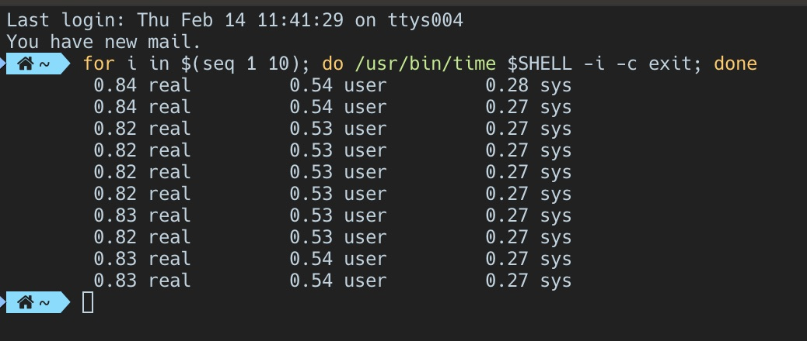
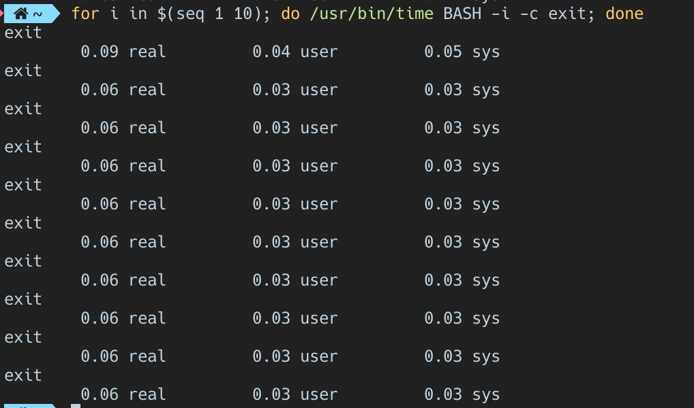
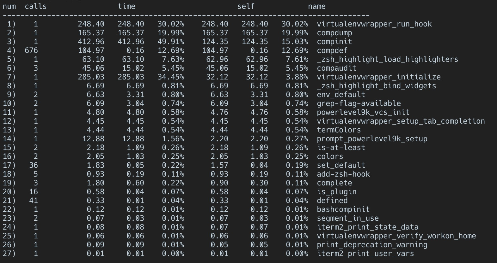
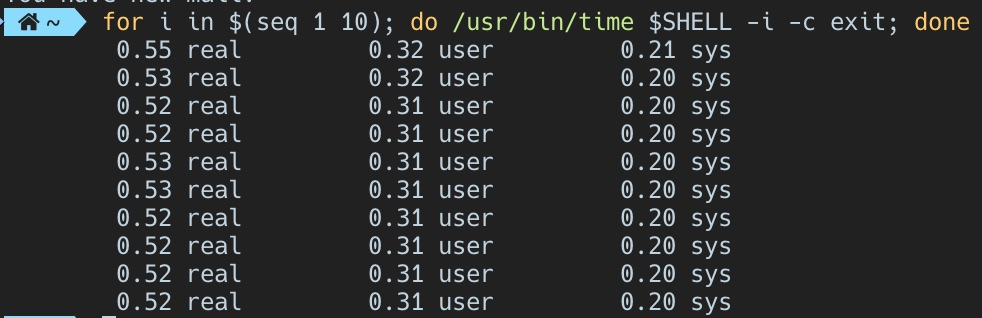

zsh was loading significantly slower than bash, so I used profiling to see what was slowing things down

Opening up a new shell was annoyingly slow. Not terrible, but enough to notice. Its a niggle.
I wanted to find out which components were causing the most delay, so I used
time to measure how long it took to launch a shell. Even though shells
might appear to be part of the low level ‘guts’ of a computer, each shell is
just an executable and can be treated as such.
To measure the startup speed of your shell, do:
for i in $(seq 1 10); do /usr/bin/time $SHELL -i -c exit; done

This shows that it takes 0.84 seconds to start zsh - not terrible, but not great:
You can compare the performance of different shells by replacing $SHELL with
zsh, bash, fish etc.
Here are the results if I used BASH instead of zsh - 9.3x faster! (but
without useful tools and plugins):

Now that I can measure how long it takes to start, it would be useful to know
which proccesses are causing the greatest delays. This could be done with
something like zsh -xv which enables verbose output and xtrace. This creates
a tonne of output, but doesnt inlcude timestamps. All I really want is
a summary of how much time each subproccess required to run, i.e. an order blind profiler.
Add zmodload zsh/zprof at the start of .zshrc and zprof at the very end.
Now when I start zsh I see the following:

Next steps - make virtualenvwrapper run faster, or asyncronously, or not at all…
Update:
virtualenvwrapper is the biggest cause of slow loading. Using the lazy
loadin option decreased loading time by 0.3s
